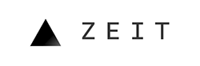

FaunaDB is unique among databases. It meets our transactional, performance, and scalability requirements without compromising developer productivity.
Prakash Janakiraman, Co-Founder & Chief Architect, Nextdoor
At Netlify, we're seeing a boom in the adoption of serverless architectures and FaunaDB is fast emerging as the de-facto datastore for those deploying stateful apps on the Netlify platform.
Matt Biilmann, CEO, Netlify
FaunaDB delivers the zero config experience that our community wants from a datastore. If you’re building a rich application that needs database, FaunaDB is our favorite choice for the ZEIT Now platform.
Guillermo Rauch, CEO & Founder, ZEIT
FaunaDB’s expressive query language and ACID transactions minimized our time to market, while FaunaDB’s data temporality simplifies our development.
Eigil Sagafos, CTO & Co-founder, ShiftX
At Apollo, we're excited to see FaunaDB offer serverless GraphQL. GraphQL makes data access dramatically simpler for developers building modern web applications.
Matt DeBergalis, VP Product & Co-Founder, Apollo
Our testing suggests that FaunaDB offers serializability, and, optionally, strict serializability, in only one cross-datacenter round-trip ... Calvin-based systems like FaunaDB could play an important future role in the distributed database landscape.
Kyle Kingsbury, Principal, Jepsen.io